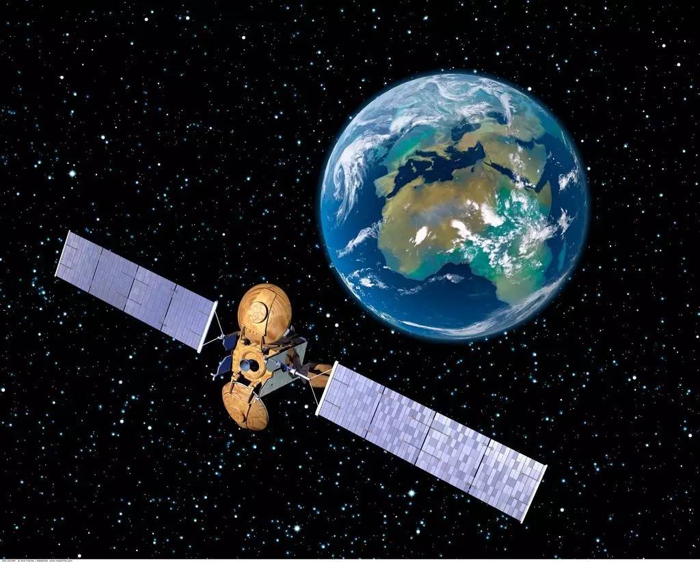
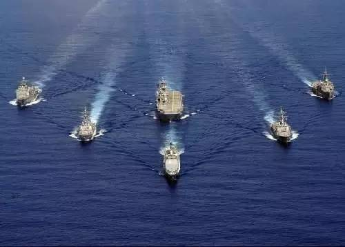

收录于合集

“一带一路”战略充满各种安全风险，军事安全挑战与威胁就是其中之一。“一带一路”战略应该针对最坏的军事安全威胁来进行谋划。作为军民双用的天基资产，理应超越公共产品的范畴，承担起保护“一带一路”军事安全的重任。在可预见的未来，构筑“天基丝路”的方向是继续增加天基资产数量，促进“一带一路”沿线基础设施的互联互通；另外，从保护“一带一路”战略的军事安全来看，要增加先进侦察卫星数量，明了沿线的各种军事安全威胁；适当增加天基对地攻击武器和中远程导弹，实施快速军事反应。“天基丝路”的建设，也需要有“战略支点”，即在关键地区、国家建立卫星地面站点。这又是一个棘手的政治问题，需要用政治智慧来解决。


一、“天基丝路”概念的提出

习近平主席于2013年9月和10月在国际论坛上提出“丝绸之路经济带”和“21世纪海上丝绸之路”构想，简称“一带一路”战略构想。从本质上讲，“一带一路”战略就是希望契合沿线国家的共同需求，通过沿线国家的优势互补以及基础设施的互联互通，推动欧亚经济一体化，进而重塑欧亚地缘经济和地缘政治，服务于中国和平发展，造福世界。
当然，实施“一带一路”战略肯定会遇到诸多障碍、挑战、风险以及威胁。为应对这些问题，上至国家层面，下至学界、智库等提出了各种应对的计划与策略。中国航天业界提出了“天基丝路”概念，这个概念由中国航天工业科学技术咨询有限公司总经理王莉提出。即通过建立一个共建、共享、共用的开放合作机制，充分利用“一带一路”国家现有和规划中的资源设施，包括空间和地面设施，构建以卫星通信、卫星导航、卫星遥感等应用卫星系统为主体，覆盖“一带一路”的体系完备、技术先进的民用空间基础设施体系，为整个丝路地区的经济发展、社会进步和民生改善提供有力支撑。因为“一带一路”地缘特点比较显著，“天基丝路”必不可少，为区域安全、防灾减灾、交通、环境、农业和资源勘探等提供必要的支持。只有共建、共享、共用的开放合作机制，才能形成“天基丝路”。其一，卫星系统的建设和互联，将涉及大量国际协调和磋商工作，如果没有一个基本共识和开放有效的机制，“共建”将无从谈起。其二，“众筹”，就是众多国家一同参与建设，一个国家无力单独承担起这个责任。这一点可以利用丝路基金、上海合作组织开发银行、亚投行等金融机构，为“天基丝路”提供融资服务。其三，航天大国要发挥作用，充分利用大国已有和规划之中的空间基础设施资源，为“天基丝路”提供基本资源和基础架构。

当然，中国产业界和学界提出“天基丝路”概念，也有推动卫星以及卫星服务、商业发射服务走向国际市场，从而带动中国卫星产业的发展，进而推动中国产业结构升级和经济转型的用意。中国先后与俄罗斯、巴西、巴基斯坦、委内瑞拉和老挝等30个国家签署双边航天协议，向有些国家提供“在轨交付”服务。截至2015年12月，中国已经完成42次国际商业发射服务，发射48颗卫星，含8颗中国国产卫星，还提供了10次国际搭载服务。卫星运用可以促进经济转型升级，促进经济结构的变化是众所周知的事实。航天投入所带来的附加值也是相当高的。根据国外的估算，在航天领域每投入1美元，可以产生10美元左右的收益。中国经济和产业也得益于航天领域的投入。据报道，中国1 100多种新型材料中有80％是在太空技术的牵引下研制完成的；此外，还有近2 000项太空技术成果运用于通信、纺织、石油、交通运输、医疗等行业。总之，航天领域对中国经济的贡献是巨大的。
航天界等有关方面继续完善“天基丝路”概念，并且积极践行。具体表现在以下方面：首先，明确“天基丝路”由哪些卫星构成。中国卫星全球服务联盟常务副理事长王忠国认为，构成“天基丝路”的卫星包括定位导航卫星、通信卫星、遥感卫星和气象卫星等。通讯卫星满足丝路沿线国家对通讯的需求；导航定位卫星提供导航服务；遥感卫星提供对地、海洋、大气、环境等观察服务；气象卫星则满足对气象信息的需求。未来将有几十颗此类卫星构成“天基丝路”。例如，北斗卫星进展顺利，到目前中国已经发射二十多颗。其次，就是如何架设“天基丝路”。要想让天上卫星更好地提供服务，需要地面站点。因此，“天基丝路”的一个重点就是建设卫星地面站点。未来，中国在中亚、西亚、太平洋、印度洋、非洲和拉美选择站点，重点地区建立15-20座地面站点。中国卫星全球服务联盟与马来西亚、印尼、马耳他、英国、挪威等国进行地面站点的协商。在这方面，中国已经取得了部分成功。例如，中国北斗卫星系统已经在巴基斯坦、泰国等建立了地面站点；向老挝在轨交付“老挝一号”通信卫星。最后，加强国际太空合作。2015年，上海合作组织成员国总理会议表示加强导航卫星的合作，促进基础设施的联络互通。同年，中俄两国总理会晤时表示，进一步加强早前确定的导航卫星的合作，而且还表示加强火箭、航天电子元器件、对地观测等领域的合作。“这些实践标志着中国航天努力践行‘一带一路’倡议，为中国航天国际化开启更加广阔的发展空间”。总而言之，“天基丝路”构建“海、陆、空、网、天”全立体化合作体系，满足“一带一路”沿途国家与地区的需求，促进沿线国家的基础设施的互联互通，有利于人员、货物的往来以及资源的勘探，同时加大生态环境的保护。同样，也可以促进中国与沿线国家的战略互信。
与“天基丝路”相关的是“一带一路”“空间信息走廊”概念。“空间信息走廊”概念是国防科技工业局提出的，并得到国家发改委的支持。国防科工局联合几个部委，展开了前期论证工作，提出了“空间信息走廊工程建设实施方案”，包括空间通信信息系统、空间遥感信息共享服务平台、空间信息应急服务保障系统和技术合作与交流培训平台等。实际上，这两个概念本质上是一样的，就是突出卫星运用在“一带一路”战略实施中的作用。这两个概念是由不同部门和领导机构提出来的，反映出各部门之间缺乏沟通。最好这两个概念能够统一起来。
中国产业界和学界等提出了“天基丝路”概念，并着力推进“天基丝路”建设，也取得了一定成绩。不过，这主要是从提供基础设施、信息的角度来论述的，也就是从提供公共产品的角度来论述“天基丝路”的作用。综合国内航天界、政府部门的设想与运用，“天基丝路”就是充分发挥卫星快捷处理各种信息的优势，发射更多的、多样化的卫星，提供通信、气象、导航、图像等服务，促进沿线国家基础设施的互联互通，便利“一带一路”战略实施。从这个界定来看，“天基丝路”被界定为是国际公共产品，而且构成“天基丝路”的卫星被限定于民事卫星和商业卫星。要实现这个目标，中国需要提供多样化的卫星星座。正如前述，这些卫星包括导航卫星、通信卫星、气象卫星、遥感卫星等。为发挥这些卫星的作用，首先，各类卫星需要形成星座，这些星座再构成整体卫星星座，发挥整体功能，提供更好的服务。其次，需要国际协调与合作：一是卫星星座需要在沿线国家建立地面站点，二是沿线国家的卫星需要兼容以实现无缝隙联结，三是沿线国家的卫星相互弥补短板以形成整体优势。例如，俄罗斯的导航卫星适合高纬度定位，而中国的北斗卫星系统则在中低纬度更能发挥优势，如果两者结合，可以实现低中高纬度的全面覆盖。最后，需要中国为沿线国家走向太空提供便利，便于其利用太空，享受太空红利。因此，中国需要向这些国家提供廉价的、优质的卫星。必要时，可以用“在轨交付”的方式向这些国家出口卫星。
“天基丝路”确实在促进基础设施的互联互通方面具有不可或缺的作用。但是，“天基丝路”还应超越公共产品的局限，上升到地缘政治高度，致力于安全领域，从军事角度为“一带一路”战略提供安全保障。历史上丝绸之路在西域的“三通三绝”以及海上丝绸之路的时断时续，表明中央政府如果不能保证丝绸之路的安全，丝绸之路根本无法进行下去。过去，西方殖民者使用炮舰外交，用武力开辟商路和保护商路，这种仗剑经商给它们带来了无穷的财富，却给殖民地人民带来无尽灾难。中国的“一带一路”战略是世界的福音，但是总有些国家视之为“威胁”，跳出来进行阻止。虽然中国不会像西方殖民者那样仗剑经商，但是，中国也需要预警和准备，以便在“一带一路”战略遭遇破坏或攻击时，保护中国的商路。因此，作为军民双用的天基资产，起着军队的“眼睛”“耳朵”和“拳头”的作用，应该为“一带一路”战略实施提供军事安全保障。“一带一路”军事安全问题，只是军方谈论比较多。例如，乔良将军就坦言：“现在有很多官员谈‘一带一路’都不谈安全问题，也不谈政治问题，更没有人谈军事问题”。他批评这种想法是错误的。还有学者谈到，一旦“海丝路”通道被强行切断，中方应果断用兵，通过“对等措施、异地封控”的策略，打破封锁和干扰。

二、“一带一路”战略的安全风险与军力短板

“一带一路”战略在陆上和海上面临诸多安全问题。就传统安全而言，在于大国仍然无法摆脱冷战时代的思维，恪守“零和”规则，因而针对“一带一路”提出各自的地缘战略，应对“一带一路”给其造成的负面冲击，或作为对冲策略，或直接进行围堵，破坏中国“一带一路”战略的实施。
美国企图通过设想的“新丝绸之路”和“大中亚”构想，构建连接中亚、南亚和西亚的交通运输线和经贸网络，削弱中国在这些地区的影响力。因此，美国利用各种事件主动介入地区安全事务，在这些国家建设军事基地并驻军，同时实施“亚太再平衡”战略，把大量海军等力量部署在亚太地区。在东亚形成了以日本、韩国为主的军事基地群；在太平洋形成了以关岛为主的基地群；在东南亚形成了以新加坡、菲律宾为主的基地群；在印太圈形成了以迪戈加西亚岛、澳大利亚为主的基地群；在西亚和东非形成了“珍珠链”军事基地群；加强了与中亚、蒙古的双边、多边关系，为其提供军事、经济援助。美国此举目的在于封堵或者对冲中国“一带一路”战略的实施。

俄罗斯在“一带一路”上创建了两个项目，即“北南国际运输走廊”和“欧亚经济联盟”。“北南国际运输走廊”是俄罗斯与伊朗、印度等16个国家合作，通过公路、铁路和海运方式，把印度西海岸的港口、伊朗阿拉伯海的港口连接起来，再通过里海，进入中亚、俄罗斯。该走廊全长5 000多公里，比现在的欧亚运输路线缩短了40％，其运费也将相应减少30％。“欧亚经济联盟”由俄罗斯、白俄罗斯与中亚五国构成，试图构成一个统一大市场。尽管中俄两国表示“一带一路”与欧亚经济联盟实施对接，但俄罗斯还是对中国的“一带一路”充满了疑虑。为了确保其两个项目的成功实施并防范“一带一路”，俄罗斯利用诸多的双边、多边安全组织如集体安全条约组织，加强与该组织成员国的军事联系。同时，俄罗斯媒体大张旗鼓地宣传中国是其潜在“敌人”，表明了俄罗斯对“一带一路”战略的防范。
日本也施展外交封堵中国“一带”的实施。在陆上，日本加强与中亚和印度、东南亚国家的合作，尤其利用高铁技术、太空技术拉拢这些国家，给予这些国家技术和经济甚至军事援助，牵制中国的丝绸之路经济带的推进。在海上，日本更是积极发声，而且动作频频，与印度、澳大利亚和美国结成“菱形价值联盟”，增加海上军事实力，派军队巡航钓鱼岛、南海，在非洲建立军事基地，大有在海上封堵海上丝绸之路之架势。
印度则企图把印度洋变成印度之洋，时刻提防外部军事力量在印度洋的存在。印度加强在安达曼岛上的军事力量，钳制马六甲海峡，威胁中国能源通道。此外，印度积极推进“向东看”战略，与东南亚国家合作，介入南海问题，加大中国在东南亚和南海上的战略压力。
领土和领海争端也存在于“一带一路”沿线国家。例如，印度和巴基斯坦就克什米尔地区存在主权纷争，韩国与日本存在独岛（竹岛）主权纠纷，中亚几国也存在领土之争。这些领土、岛屿争端直接威胁到“一带一路”战略的实施。而且，中国与“一带一路”沿线一些国家也存在领土和岛屿争端。中日存在钓鱼岛、东海经济专属区之争；中韩存在苏岩礁主权之争；中国与东盟诸国存在南海岛屿主权之争；中国与印度也存在领土纠纷等。这些都对“一带一路”战略实施产生了实实在在的安全威胁。
就非传统安全而言，恐怖主义肆虐于陆上“丝绸之路”。在中亚和中国新疆地区，三股势力（恐怖主义势力、宗教极端势力和民族分裂势力）是区域内最大的非传统安全威胁。尽管这些势力在某些方面存在差异，但其指导思想相互融合、人员相互交叉，同时与国际恐怖组织有着千丝万缕的联系。随着2016年美军从阿富汗撤军完毕，三股势力有可能掀起更多、更加血腥的恐怖活动，严重影响中国和中亚的安全，对中资企业的投资以及中国海外财产和人身安全造成严重威胁。
中国能源、货物的运输很大程度上依赖海洋。因此，海盗活动也是“一带一路”战略实施所要高度关注的因素。尽管在国际社会打击下，一度活跃在非洲东部的索马里海盗大大收敛，但是依然时不时地发起海盗攻击。另外，东南亚水域的海盗则是一股不可忽视的非传统安全威胁。在索马里海盗逐渐减弱之时，东南亚海盗沉渣泛起。“2014年全球海上劫持事件达21次，比2013年的12次大幅增加。其中，11次是发生在东南亚水域”，而其中以新加坡海峡和马六甲海峡为甚。
“一带一路” 沿线交织着传统安全和非传统安全威胁，尤其是海洋安全挑战与威胁最大。中国经济增长的大动脉是从中东连接印度洋，途经马六甲海峡的航道。海上丝绸之路上的曼德海峡、霍尔木兹海峡和马六甲海峡节点通道的安全至关重要。曼德海峡安全挑战与威胁主要来自海盗的威胁，霍尔木兹海峡的威胁则来自地区安全局势，包括恐怖活动和区域内大国和域外大国的（军事）安全活动，马六甲海峡则受美国和印度的控制。
以上这些挑战与威胁，需要强大的军力予以快速应对。目前，中国军力无法应对这些安全威胁，尤其是同时应对陆上、海上传统与非传统的安全更加吃力。
中国在军事安全保障方面获得了长足进步，尤其表现在军力投送与快速反应方面，这是国际战略界的共识。但是，这些进步中也存在一些遗憾，那就是以目前现有军力的战略投送能力、作战能力等还不能完全满足“一带一路”战略实施中的军事安全需要。詹姆斯敦基金会的《中国简报》在一篇文章中谈到，中国四位军方学者（乔良、朱成虎、纪明葵和梁芳）都谈到解放军应该要从军事安全角度保护“一带一路”，但是只有一位（朱成虎）认为解放军完全有能力在海外保护“一带一路”，其他三位则认为解放军现在还无法提供足够的保证。乔良将军认为，中国陆军保家卫国没有问题，但是在保护“一带一路”上，中国陆军要具备在沿途展示陆上远征能力，海军和空军同样也需要远征作战能力，做到“剑到履到”，保护沿途中国的利益与设施。就陆军而言，要进行一场革命，做到航空化。
海空军实力是中国的短板。随着“一带一路”的推进，以目前仅有的、还没有南下到南海的航母编队以及不足的海外军事基地，海军是无法满足“经济大动脉”上的军事安全保障的。因此，需要更多的航母编队战斗群，能够有效辐射到西太平洋、印度洋和地中海。“要达到有效维护‘海上丝绸之路’通道安全的目的，中国海军须具备一定的力量投送能力。没有海上军事投送能力，海上通道保护将只是一纸空文。”
空中的短板，可以从上述战略投送能力中得到反映。中国的战略运输机数量不多，运力有限，更重要的是中国护航战斗机作战半径有限，即使能够得到加油机的帮助，但航程扩大有限。美国媒体说中国“侧卫”战斗机作战半径没有加油机的帮助也可以达到1 500公里，总体而言，中国人民解放军现有军力可以保护领土、海疆，但是要走出国门，保护“一带一路”可能遭遇的军事安全挑战，则能力不足。

三、大国利用太空技术围堵“丝路”实施

正如前述，中国推进“一带一路”战略中遇到潜在和现实的传统和非传统的安全挑战与威胁，而中国军事力量在海外保护国家利益、资产和人员的安全存在能力不足。中国也正在努力建设军力以弥补短板。在此情况下，中国应该超越“天基丝路”的公共物品特性来推进“一带一路”军事安全保障。
众所周知，天基资产是一个军民双用的技术，是军力“倍增器”和国防战略的“赋能器”。主要表现在以下四个方面：其一，为军队提供信息处理平台，是军队现代指挥系统C4ISRC4ISR为现代化军事指挥系统，它是7个子系统指挥、控制、通信、计算机、情报、监视和侦察的英语单词首字母的缩写。的关键节点。军队的军事行动，本身就是各种信息反复循环利用的过程，包括获取、传输、处理、控制和利用。天基资产本身就是信息平台，各种信息在此交流融合分发出去，具有无与伦比的优势与作用，对于战争的胜负具有极为重要的影响。卫星成为军队的C4ISR的关键节点。这就是为什么航天大国要发射更多卫星的原因，也就能理解一些航天强国如美国、俄罗斯要组建航天部队的原因。其二，为作战提供通信保障。卫星通信的容量是其他载体所无法比拟的。研发大容量的通信卫星是其中的一个趋势。其三，定位导航卫星引导部队实施精确打击。利用定位导航卫星系统可以使部队、单兵和作战系统随时了解所处的位置，从而极大提高指挥官对战场行动的掌控能力。航天大国对定位导航卫星的争夺很激烈。其四，导弹预警卫星预警导弹攻击。预警卫星探知导弹发射的能力是地面雷达无法望其项背的。美国正在部署天基红外系统（SBIRS），补充现有的导弹预警卫星系统。天基红外系统是新一代红外监视系统，是美国导弹防御系统的重要组成部分，可服务于全球、战区导弹预警、导弹防御和战场态势感知等。俄罗斯预警卫星系统已经残缺，正在力图补充现有的卫星。日本在2015年颁布的《宇宙基本政策计划》中声称日本所处安保环境“更为严峻”，而宇宙对于安保的重要性也“明显增加”，故而强化宇宙开发利用产业基础成为“紧要课题”。由此，该计划明确写入将在太空安全领域强化日美合作。
此外，卫星资产可以充当对地快速攻击武器。美军全球快速打击系统在一个半小时之内可以对全球特定地点实施打击。除了前沿部署军队外，该打击系统很大程度就是依靠天基武器，包括“上帝之杖”X-37B、超高音速武器和洲际弹道导弹等。美国研发的“上帝之杖”由位于低轨道的两颗卫星平台组成，其中一颗卫星搭载名为“上帝之杖”的金属棒，重量达几吨。另外一颗卫星作为其“眼睛”“耳朵”。“上帝之杖”是天基动能武器，利用小型火箭助推和自由落体产生的巨大动能，摧毁目标，其速度为每小时39 000公里，可以对地球上任何地区战略目标实施打击。因速度快、重量大，其打击效果堪比核武器。超高音速武器，也是属于太空武器，至少是通过了太空，以几倍或十倍的音速攻击目标。在攻击目标的过程中，该武器可以改变弹道轨迹，对方的拦截导弹无法拦截。一旦发射，在很短时间内就可攻击目标。
一方面，正因为天基资产具有上述的军事价值，主要航天大国大力扩大天基资产。根据美国忧思科学家联盟（Union of Concerned Scientists）2015年9月1日的数据，全球卫星总数为1 305 颗，归六十多个行为体所有，其中美国549颗、中国142颗、俄罗斯131颗、日本62颗，美、中、俄、日四国所拥有的卫星数量居世界前四位，总数达884颗，占全球卫星总量的67.7%。其余拥有卫星数量较多的国家有欧洲的法国、德国、英国、意大利和欧空局以及亚洲的印度、以色列。
另一方面，太空大国和太空强国军事卫星的数量比重偏高。太空中一共有345颗军事卫星，其中美国152颗、俄罗斯79颗。这里特别需要说明的是，上述军事卫星数量，并不能真实反映现实。因为美国忧思科学家联盟与中国对“军事卫星”的理解存在一定偏差，该联盟根据卫星所属部门来划分是否属于军事卫星，只有由军方管理的卫星，才属于军事卫星，否则就不属于军事卫星。例如，其所统计的军事卫星并没有包括由日本内阁官房控制的8颗军事侦察卫星；虽然美国“陆地卫星”（Landsat）7号和8号是对地侦察卫星，但由于其属于“政府”就没有被列为军事卫星。此外，根据《登记公约》，一国只需要把卫星的有关诸如轨道位置、倾角等登录在案就可以了，不需要特别说明卫星的军事用途或者民事用途，因此，有很多国家就利用这一点，并不特别说明卫星的具体功能，以此来模糊卫星的军事功能。故此，世界上的军事卫星数量远远不止于上述345颗。实际上，有些卫星被漏记。例如，美国的X-37B，尽管它可以像飞机一样着陆，也可以在亚轨道上飞行，但是一旦在高于100千米（或者110千米）高的轨道上飞行，就是卫星。正如前述，X-37B是可以在亚轨道和轨道上自由飞行的，但该航天器就没有被录入进来。
航天大国之间不仅继续扩大军民双用天基资产和专用军事卫星，而且有些航天大国、强国利用航天技术，开展太空外交，针对中国的“一带一路”战略，或对陆上，或对海上物流进行瞰制，监视“一带一路”的实施，对“一带一路”的推进具有现实或潜在的安全威胁。下面主要从航天大国以及与有关国家的合作来谈论海上丝路可能遇到的现实或潜在的安全挑战、威胁。
印度与越南加强卫星合作，有利于两国了解中国的海上活动。印度将在越南胡志明市建立一个卫星追踪和数据接收中心。建成后，越南可实时获取印度地球观测卫星回传的这一地区图像信息，作为“交换”，越南能够向印度提供具体的追踪坐标。印越两国之间的卫星地面站点的合作，具有重要军事意义：两国可以看清中国海军、商船在南海的活动，诸如中国在南海上的军事基地、岛礁建设等。在越南与中国就南海岛屿主权之争出现紧张关系之后，越南就打算寻求先进的情报、监视和侦察技术，弥补2013年发射的首颗地球观察卫星的不足。与印度就卫星地面站点的合作，部分满足了越南的需要。越南在印度的帮助下，有针对性地对中国实施一定的反制措施。当然，对于印度而言，不仅扩大了其对中国在南海活动情况的了解与掌握，为其在未来可能的干预活动留下后手，而且扩大了对天监视能力。印度已经在本国的安达曼和尼科巴群岛以及文莱、印尼和毛里求斯等地建设地面站点，本来这些站点是用来扩大印度对地观测范围的，同时用来跟踪本国卫星发射情况，但更重要的是，它们也是用来监视太空的。既然能跟踪本国卫星发射情况，就能看清部分天上卫星情况，至少是过顶上述地面站点上空的卫星。在一定程度上印度可以用反导技术摧毁近地轨道卫星，因为“和防御来袭导弹相比，导弹防御可能在技术上更适合作为一种反卫星武器”。这对于中国的某些卫星来说就是潜在威胁。
日本正在发挥其太空技术的优势，开展太空外交。东盟是其选择的一个主要对象，目标就是支持与中国有领土、领海纠纷的国家，从中搅局南海，阻碍中国“一带一路”的实施。2011年，日本向越南提供援助，助其发射卫星。2013年，日本又向越南提供“先进对地观察卫星”，用来提高越南对南海的监视能力，为其海军提供帮助。2015年，日本提出建议，国际空间站可以接纳东盟宇航员，希望以此拉拢一些国家对抗中国。2016年，日本将与越南、菲律宾等亚洲8国共同构建卫星监测网，将发射50颗卫星，监测地球，实施监测整个亚洲。
随着美国战略重心移到亚太，实施“亚太再平衡”战略，作为补充或者作为手段，美国宣布“太空再平衡”战略。2013年，美国助理国务卿帮办弗兰克·罗斯（Frank A. Rose）提出了“太空再平衡”，表示“随着美国外交和国防政策向亚洲再平衡，中国正在深化在这一地区参与太空安全事务的努力”，由此加强了美日澳太空合作，尤其是美国与日本加强了太空合作，共同应对海洋活动。2015年4月的《日美防卫合作指针》明确指出，两国要加强天基海洋态势感知能力，共同开发海洋侦察卫星，不仅要做到对海上船只、军舰活动一览无遗，而且还要力图探测海下潜艇活动——利用海水温度的变化，探测潜艇的动向。侦察海洋水面活动，美日先进海洋侦察卫星完全具备此种能力，如果能够真正实现用天基资产探测战略、战术核潜艇，将对中国海洋活动造成切实巨大的安全威胁。
本来南海安全问题复杂，加上一些域外大国的干预，南海安全局势不容乐观。“中国周边热点增多，燃点降低，海上方向安全威胁凸显，家门口生乱生战的可能性增大”。区域内外的国家利用天基资产给南海安全热点添加干柴，对中国“一带一路”的实施产生严重的安全威胁。

四、“天基丝路”助推“一带一路”的实施

“一带一路”的实施固然需要天基资产提供通信、导航、气象等基础设施与信息的服务，但同时，“一带一路”充满着各种各样的凶险，一些国家行为体和非国家行为体也都在使用天基资产，阻挠“一带一路”的推进，要么使用天基资产间接威胁“丝路”——对“一带一路”地区的监视，本身就是一个威胁，要么使用天基资产直接威胁“丝路”——天基武器如“上帝之杖”和X-37B对护航的海军军舰等战略目标就是巨大威胁。为应对“一带一路”实施过程中遇到的安全问题，尤其是军事安全问题，除了加强中国的海陆空军外，更重要的是加强天基资产建设，强化战略支援部队的建设。
从总体上提升卫星数量，加强信息基础设施建设。正如前述，“天基丝路”本身就是从促进沿线国家基础设施互联互通的角度出发而构建的。天基资产是各种信息的收集方、发布方、储存方，对于基础设施的互联互通具有不可或缺的重要性，甚至没有替代的，例如气象卫星提供的气象服务，是其他任何手段无法与之比拟的。再如，定位导航卫星提供的实时位置，几乎没有其他方式可以与之媲美。因此中国需要继续加大卫星的总数。虽然中国在轨卫星超过140颗，位居世界第二，仅次于美国，但与美国还存在一些差距。“十二五”期间中国发射“86箭138星”，5年年均发射次数超过17次，其中2015年发射19次。美国自从2010年被中国首次超过后，其后，美国一直力争发射次数超过或者至少与中国持平，2015年美国发射20次，始终保持着在轨卫星总数第一。俄罗斯最近这几年一直是发射次数最多的国家，2015年为26次。增加发射次数，固然是增加卫星数量的一个好方式，但是要争取更多的一箭多星。2015年，中国长征6号一次发射20颗卫星，但与俄美两国相比还是有一定距离，2013年美国一箭29星，同年俄罗斯一箭32星。
增加在轨卫星数量总数，当然是为“天基丝路”添砖加瓦，也是为“一带一路”提供诸如气象、通信等公共产品服务，促进“一带一路”的推进。更重要的，这些卫星提供的服务已经超越了公共产品的范畴，实际上，也起到了为“一带一路”提供安全保障的作用，多一颗通信卫星，就为军事保障提供更多的卫星通信服务；多一颗气象卫星，就为军队提供气象服务多一份保障。“一带一路”的军事安全保障离不开这些民事卫星。
此外，还应扩大高分辨率的侦察卫星数量。要想明了“一带一路”沿线发生的包括军事安全在内的危险与威胁，就是要依靠天基侦察卫星。正如前述，美日联合研发海洋卫星，监视海洋动向，意在从太空了解中国海军和民事海上活动，包括水下的，一旦有军事需要，就可以对海上活动进行打击，或者直接把情报提供给第三方，对中国“下手”。对此，中国应该扩大先进的侦察卫星，尽最大努力看清丝路沿线的情况。“高分”4号卫星是这方面的代表。中国于2015年年底发射“高分”4号卫星，该卫星位于地球静止轨道，也就是距离地面36 000千米，分辨率为50米，完全可以明了航空母舰的动向。如果发射3颗此类卫星，基本上可以做到24小时监控大国航母，当然也能监视“一带一路”沿线的重大动向，如军事装备的调动，等等。目前，只有一颗“高分”4号卫星，还不足以完全看清沿线具体情况，未来还需要发射2颗，从理论上可以侦察除地球南北两极地区之外的全球。当然，侦察卫星需要构成高中低轨道的搭配，相互补充，才能做到彻底了解沿线具体情况的变化。中国遥感系列卫星，高分1、2、3号卫星，海洋卫星，地球观察资源卫星，都可以相互配合。只是中国要花精力提高卫星的分辨率——美国民用卫星的分辨率是0.31米，中国最好的军用侦察卫星是0.45米，差距可见一斑。另一方面，还需要发射一定数量的海洋卫星，以期通过这类卫星发现潜艇活动。这样至少中国的“一带一路”安全有了部分保障。
天基对地武器也是弥补军力短板的重要方式，是保护“一带一路”的帮手。正如前述，美国的天基对地打击动能武器“上帝之杖”威力巨大，速度也是惊人的。如果说，“上帝之杖”还在研发之中，那么X-37B空天战斗机就是实实在在的天基对地打击武器。根据媒体的报道，美国X-37B其中的一个功能就是充当轨道轰炸机。它根据需要和指令调整轨道，在需要的时间和地点发射武器对地实施攻击。在陆军航空化之前以及海军和空军还不具备远程奔袭之前，此类天基对地打击武器是保护“一带一路”的国之利器。
如果说，增加卫星总体数量是提高军队战斗力、增加护航“一带一路”军力的“眼睛”与“耳朵”的话，那么研发部署弹道导弹是增加保护“一带一路”的“拳头”，而且是快速的“重拳”。弹道导弹不是严格意义上的天基资产，但它是通过太空的武器。美国把远程和洲际弹道导弹列为全球快速打击系统，本身说明美军对弹道导弹的重视——一枚洲际弹道导弹从发射到击中万里之遥的目标也就是几十分钟的时间。因此，几年前，美军就开始把一定数量的远程和洲际弹道导弹作为常规打击武器来使用，对敌实施精确打击，具有很大的威慑效果。中国不能像美国那样，把宝贵的、数量少的洲际弹道导弹改装为携带常规战斗部的弹道导弹，但是可以研发并增加空基的、海基的和陆基的中远程弹道导弹，中国东风－26中远程弹道导弹就应运而生。该款导弹射程4 000千米左右，射程可达太平洋的关岛以及印度洋上的迭戈加西亚。陆基版的常规东风－26还是改进的反舰版，具有强大的威慑力，可以为中国“一带一路”战略实施提供相当程度的军事安全保障。因此，为了更好地保护“一带一路”安全，中国应该继续提升和改进其作战性能，同时增加海基版和空基版的东风－26。
目前，从国内外的公开报道来看，在技术上和财力上，中国发射更多卫星，制造空天战机、超高音速武器以及中远程弹道导弹等战略武器不是障碍。要让“天基丝路”真正促进“一带一路”沿线基础设施的互联互通以及为之提供军事安全保障，需要更多的地面站点。这一点类似于全球海军需要在全球建立海军基地一样，这就是中国所说的“战略支点”。印度在越南、印尼、安达曼群岛、毛里求斯等地建设地面站点，用来跟踪卫星发射和接受卫星数据。“一带一路”遍及欧亚非、大洋洲等诸多国家，地形、地貌、地质、气候、环境千差万别，要想“天基丝路”发挥应有的作用，需要在关键地点设立地面站点，接收、处理、发送卫星信息，这是一个严肃的政治问题。尽管中国的“北斗”系统在巴基斯坦和泰国设有地面站点以及与俄罗斯的“格洛纳斯”系统在两国对等设立地面站点，但是中国需要扩展更多的地面站点。如果说“北斗”系统是一个全球开放的免费系统，政治成分少些，那么敏感卫星，如侦察卫星政治色彩浓厚，不好处理。其处理难度远高于建立军事基地，因为建立军事基地，可以为接受国带来很多经济利益——丰厚的基地出租费用以及基地建设和运转可以带动该国的就业，但是，除非承诺给予，建立一个地面站点并不能给接受国带来太多的经济利益。因此，天基丝路的地面“战略支点”是一个需要用政治智慧处理的战略问题。

五、结语

“天基丝路”概念是在“一带一路”概念提出一年之后出现的，原本是从基础设施的角度设想推动“一带一路”战略的实施。这个设想主要从提供公共产品的视角助推“一带一路”战略。实际上，虽然不能说“一带一路”险象环生，但也遍地荆棘，时不时地还会窜出“毒蛇猛兽”，虎视眈眈地盯着过往的人员和货物。作为军民双用的天基资产，理应超越公共产品的范畴，为“一带一路”提供军事安全保障，而且是当仁不让地承担起应有的责任。这一切源于解放军目前还无足够的远程能力为“一带一路”保驾护航。即使中国海陆空三军拥有了该能力，天基资产也应该发挥其应有的使命，让三军如虎添翼。
“一带一路”沿线内外国家、非国家行为体或谨慎或恐惧地看待“一带一路”的延伸，甚至千方百计地阻挠“一带一路”的推进。在这种情况下，沿线内外航天大国施展太空外交，与沿线国家进行太空合作，给“一带一路”“挖陷阱”“使绊子”“设路障”等，也不排除它们有可能等待合适的时机公然出手。为了缓解“一带一路”各种安全风险，发展天基资产为“一带一路”提供军事安全保障是必要的。就目前中国军力的短板而言，中国应该发展快速的对地打击系统，诸如天基对地武器、空天飞机等。当然，要想让天基资产发挥更好的作用，中国需要在海外谋划“战略支点”，建设地面站点。
主张用“天基丝路”为“一带一路”提供军事安全保障，也许会削弱“一带一路”的经济色彩，加重政治色彩，尤其是添加军事成分。实际上，世界并不太平，军事安全威胁始终没有远离中国而去。中国反复向世界宣告，中国没有称霸的野心，中国欢迎各国“搭便车”，让世界各国从中国的和平发展中获得实实在在的红利。但是，总有一些国家戴着有色眼镜看中国，散布“中国威胁论”，千方百计地阻碍中国，甚至摆出架势要与中国决一死战。因此，只有立足最坏的情况，谋划“一带一路”，才能有效推进之。“一带一路”战略的实施，不能仅仅建立在良好的愿望基础之上，还应建立在良好的安全保障包括军事安全保障之上。
也许有人质疑，“天基丝路”在军事安全保障上为“一带一路”保驾护航不可避免地会将“天基丝路”军事化，给“一带一路”的实施增加难度，因为这样似乎会坐实中国“太空军事威胁论”。但实际上，构成“天基丝路”的天基资产本身就是军民双用的资产，卫星广泛地运用于军事行动，太空早已军事化，甚至武器化，这是一个不争的事实。只要中国发展太空，中国人民解放军的太空军力和整体军力都会提升，所谓的中国“太空军事威胁”论调也不会消停。因此，中国不能因为国外的论调泛起，就不能提“天基丝路”的军事化，更不能不为“一带一路”战略提供军事安全保障。
** **作者简介 ********
何奇松，上海政法学院国际事务与公共管理学院教授，副院长
文章来源：国际安全研究ISS
筛选：早安老师
编辑：里仝
您可能还会喜欢：